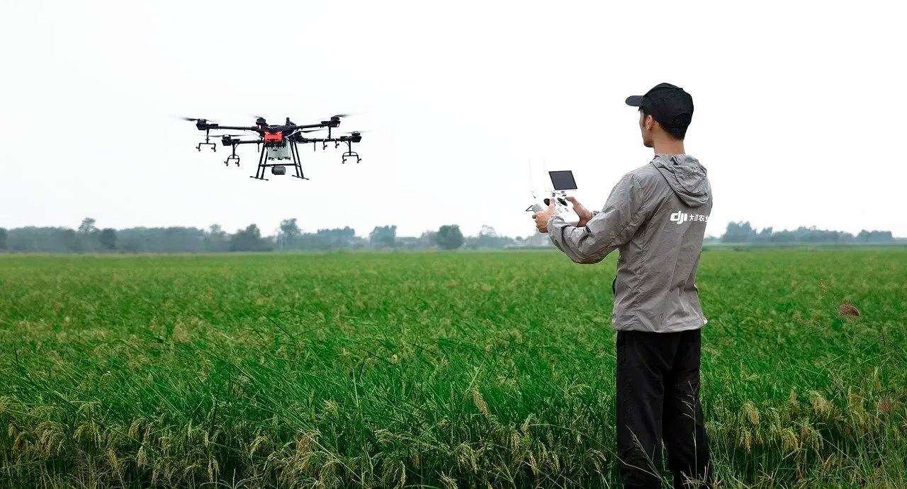
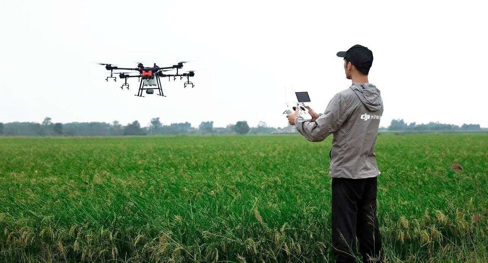

Optimizando la Agricultura: Riego de Precisión con Drones
El riego con drones es una técnica agrícola que utiliza vehículos aéreos para aplicar riego preciso, optimizando el uso del agua y mejorando la sostenibilidad. Monitorea la humedad del suelo en tiempo real, permitiendo decisiones informadas y aumentando la productividad de los cultivos.
Riego Inteligente con Dron: Ventajas Innovadoras
- Optimización del uso del agua
- Monitoreo en tiempo real
- Acceso a áreas difíciles
- Reducción de costos laborales
- Prevención de enfermedades
- Personalización del riego
Altura de Vuelo
Alcance máximo de vuelo: XX metros
Capacidad de Carga
Capacidad de carga útil: XX litros
Autonomía de Vuelo
Autonomía máxima: XX minutos/horas
Maximiza tu Eficiencia Agrícola: Riego Inteligente con Drones
 

Preparación del dron y equipo
Antes de iniciar cualquier operación de riego con dron, es fundamental dedicar tiempo a una preparación meticulosa del equipo. Esto implica asegurarse de que el dron esté completamente cargado y en condiciones óptimas de funcionamiento. Se debe realizar una revisión exhaustiva de todos los sistemas, incluidos los sensores y los sistemas de navegación, para garantizar su correcto funcionamiento.
Planificación de la misión de riego
La planificación de la misión de riego con dron es un paso crítico para garantizar la eficacia y la precisión en la distribución del agua. Utilizando software especializado, se establece una ruta de vuelo óptima sobre el área de cultivo, teniendo en cuenta una variedad de factores como el tipo de cultivo, las condiciones del terreno y las necesidades específicas de riego de cada zona. Ajustar la altitud y la velocidad de vuelo es esencial para garantizar una cobertura uniforme y completa. Esta planificación minuciosa no solo maximiza la eficiencia del riego, sino que también reduce el riesgo de daños a los cultivos y optimiza el uso de recursos hídricos.
Ejecución del riego con el dron
La ejecución del riego con el dron implica poner en práctica la planificación previamente establecida. Una vez en el aire, el dron sigue la ruta planificada con precisión, manteniendo una comunicación estable con el operador en tierra. Durante el vuelo, se monitorea continuamente el progreso del riego utilizando tecnología de mapeo y telemetría, lo que permite realizar ajustes en tiempo real si es necesario.
Posterior al riego y mantenimiento
Por supuesto, aquí tienes un párrafo centrado en el cuarto punto, el posterior al riego y mantenimiento: Después de completar la misión de riego, es crucial realizar una serie de pasos para garantizar el mantenimiento adecuado del equipo y evaluar la efectividad del proceso. Se lleva a cabo una revisión exhaustiva del área para verificar que todas las zonas hayan sido cubiertas de manera adecuada y que no se haya dejado ninguna área sin riego.